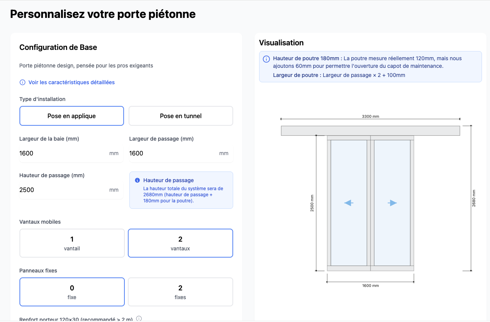

Exclusivement pour les professionnels
La porte automatique des pros
Conçue et fabriquée au pied du Vercors.
Simple à installer.
Prête en 12 jours.
- 12 jours
- Délais de fabrication
- Simple
- À installer
- France
- Conçue et fabriquée

Un partenariat clair
Nous fabriquons.
Vous installez.
- Votre chantier
- Votre maintenance
- Votre client
SlideX reste fabricant.
Nous ne posons pas. Nous ne prenons pas vos contrats de maintenance.
Jamais en concurrence avec vous.
Délai express
12 jours.
Pas 6 semaines
Parce qu'un chantier n'attend pas.
Votre porte est fabriquée et expédiée en 12 jours ouvrés.*
Tout est pensé pour la pose.
Notre gamme
Une solution pour chaque chantier.
Installation neuve, rénovation d'un équipement existant ou automatisation d'une porte battante : découvrez la solution adaptée à votre projet.
Portes coulissantes
Portes automatiques coulissantes
1 vantail, 2 vantaux ou télescopique.
Votre porte, en quelques clics
À vos mesures.
En quelques minutes.
Configurez votre porte, visualisez votre projet et obtenez votre prix instantanément.

 Photo expert SlideX
Photo expert SlideX
5% de remise annuelle
Rejoignez notre réseau d’installateurs et profitez de 5 % de remise, ainsi que d’une production prioritaire pour garantir des délais ultra courts.
✅ Portes automatiques disponibles en 12 jours (15 jours avec laquage et vitrage)
✅ Kits de rénovation compatibles toute marque (Record, Portalp)
✅ Support technique dédié
Et si on fabriquait vos portes automatiques ensemble ?
Basée au pied du Vercors 🇫🇷, SlideX conçoit et produit des portes piétonnes automatiques pour les professionnels. Fabrication rapide, support réactif et qualité 100 % française.
38180 - Seyssins
Témoignages
Ils en parlent mieux que nous
Installateurs, menuisiers, entreprises… Ils nous font confiance au quotidien.
Découvrez leurs retours d'expérience sur nos portes automatiques et nos kits de rénovation.
Ressources pour les pros
Le terrain,
sans blabla.
Installation, réglementation, diagnostic, maintenance.
Ce qu'on apprend sur le terrain, on le partage.

Implantations
Réseau national
Grâce à nos partenaires installateurs et représentations exclusives de proximité déployées dans tout l'Hexagone, SlideX assure à chacun de ses clients un dépannage et une réparation rapide 24/7.
Cliquez sur les marqueurs pour découvrir nos agences et partenaires dans toute la France !
Un réseau de proximité
Pour un délai de dépannage et de réparation de 30 minutes ainsi que l'installation et la fabrication de systèmes de fermeture de choix, SlideX reste à votre disposition.
Foire aux questions
Questions fréquentes
Vous avez des questions sur nos portes automatiques ? Voici les réponses aux plus fréquentes.
Quels sont les délais de fabrication de vos portes automatiques ?
Vos portes sont-elles compatibles PMR (Personnes à Mobilité Réduite) ?
Proposez-vous des kits de rénovation pour d'autres marques ?
Comment devenir partenaire installateur SlideX ?
Dans quelles régions intervenez-vous ?
Quelle garantie proposez-vous sur vos portes automatiques ?
Une autre question ? Contactez notre équipe